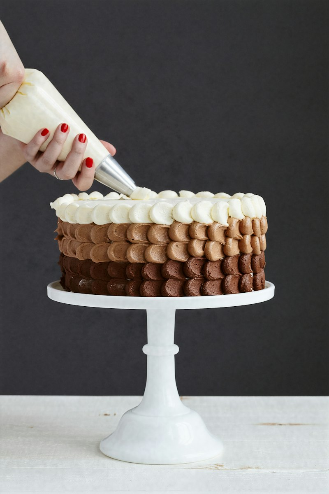
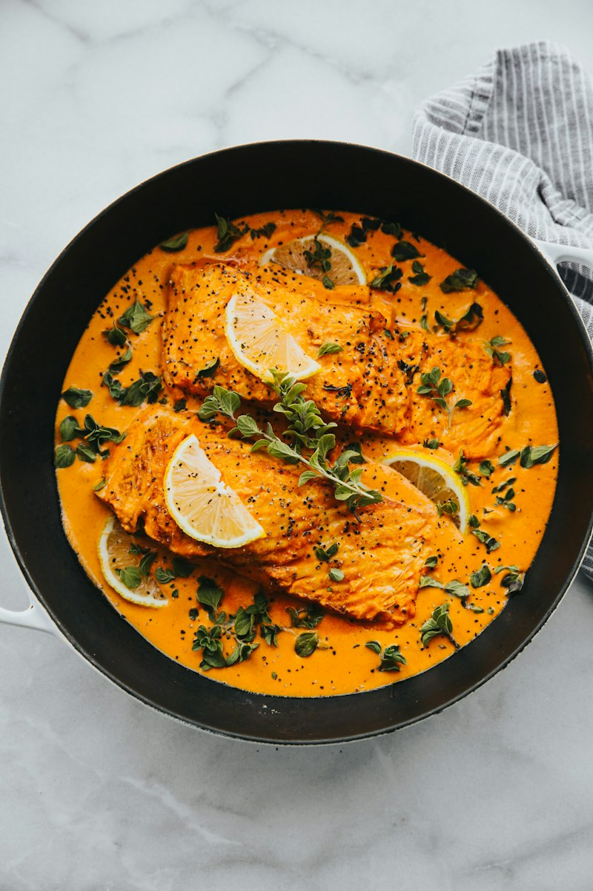

Western Double-Bevel
Chef Knives
Full apex restoration for Western-style chef knives. We reset factory bevel angles, hone on progressive whetstones, and preserve the belly profile for smooth rocking cuts.
Professional knife care for fine culinary blades. We restore cutting efficiency, correct edge geometry, and assess restorative repairs using traditional waterstone methods.
Every culinary knife requires stone progressions matched to its steel hardness and blade thickness.
Full apex restoration for Western-style chef knives. We reset factory bevel angles, hone on progressive whetstones, and preserve the belly profile for smooth rocking cuts.

Sharpened with a flatter profile toward the heel for crisp up-and-down slicing. Honed to an acute 12°–15° angle with leather strop deburring.

Delicate in-hand peeling and trimming knives require precise tip reprofiling. We remove dull shoulder metal to allow effortless skinning without digging into produce.

The go-to knife for shallots, herbs, and everyday board work. We balance keen cutting bite with edge retention suitable for high-frequency kitchen tasks.

Long, flexible or rigid slicers honed to glide cleanly through roasts, ham, and cooked proteins in a single uninterrupted stroke without tearing fibers.

Flexible and semi-stiff blades require specialized honing along curved contours to glide close to bone and silverskin without edge rolling or micro-chipping.
Sharpening methods vary depending on steel metallurgy, bevel geometry, and knife condition. Specialist cutlery requires tailored stone grit selection.

Hard Japanese steels like Shirogami and Aogami require gentle water lubrication. We respect factory asymmetric grinds (70/30 or single-bevel kataba) with fine slurry polishing.

Serrated edges cannot be run across flat whetstones. We use specialized ceramic slipstones and tapered diamond files to sharpen each individual gullet while deburring the flat side.

Hard crusts dull bread knives over time. We recondition scalloped teeth to catch sourdough crust cleanly without compressing the soft airy crumb inside.

Honing meat cleavers with durable convex edges, take-apart kitchen shears, and culinary poultry shears where the blade geometry and pivot pin allow proper service.
Accidental damage happens. We evaluate blade thickness, temper, and fractures. Please note that repair suitability depends on physical inspection; severely compromised steel cannot always be safely salvaged.

For blades with wavy cutting edges, rolled metal from steel hones, or flat dead-spots along the belly. We carefully re-align the profile so the cutting edge makes uniform board contact.

Evaluating edge chips caused by hard seeds or bone strikes. We assess whether grinding past the damage retains safe blade geometry without making the knife excessively thick behind the edge.

Restoring loose wooden handles where structural integrity is sound. We sand out minor surface splintering, tighten accessible rivets, and seal dry timber with food-grade conditioning oils.

Assessing vintage carbon steel knives with surface rust pitting or broken tips. We verify whether grinding back the spine can restore functional balance without compromising core metallurgical temper.
A clear, dependable intake and sharpening process designed for your kitchen knives.
Select the sharpening or repair services suited to your cutlery. Let us know the types of blades and any specific edge concerns you have.
Wrap your knives securely in clean cloth rolls, cardboard sleeves, or thick kitchen towels before dropping them off safely for intake.
Each blade is examined on the workbench. We measure bevel angles, check for chips, and hand-hone on appropriate waterstones.
Collect your finished cutlery, verified sharp through paper testing and safely packaged for return to your home or commercial kitchen.
From everyday German chef knives and fine Japanese cutlery to chip restoration and serrated blade maintenance, we provide mindful, artisan care.